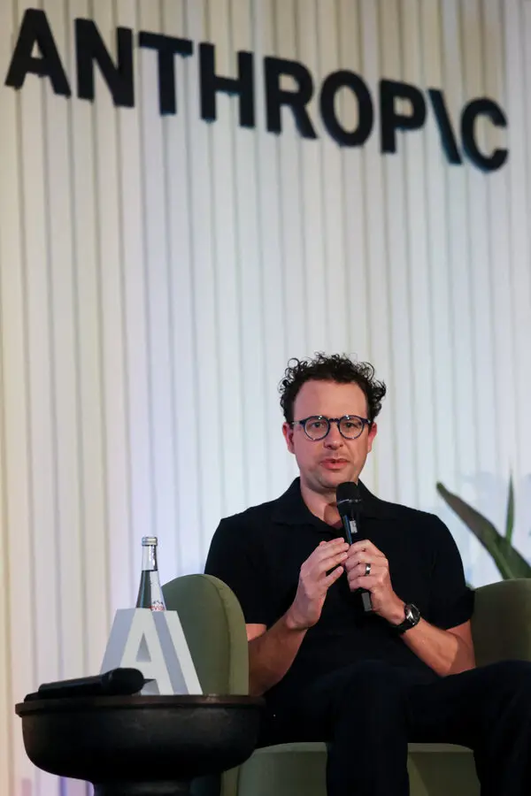

Anthropic considera lançar novo modelo de IA antes do IPO
- O Anthropic pesa o tempo de lançamento à medida que o GPT-6 Astra da OpenAI ganha força nos negócios, dizem as fontes
- A Astra responde por cerca de 13% dos gastos corporativos com IA rastreados pela Ramp, contra 8% de Claude Fable
- O Anthropic pode levar o IPO a eleições de meio de mandato nos EUA em novembro, dizem duas pessoas familiares
18 de setembro (Reuters) - A Anthropic está considerando lançar um novo modelo de IA para combater o ímpeto da OpenAI desde o lançamento do GPT-6 Astra, de acordo com três fontes, antes de um IPO esperado e depois que seu CEO pediu uma desaceleração em toda a indústria.
O momento de um possível lançamento com o objetivo de enfrentar a pressão competitiva de um rival direto segue o apelo do CEO da Anthropic, Dario Amodei, à comunidade global de IA para desacelerar o ritmo de liberação de novas capacidades para atender às preocupações de segurança, disseram as fontes.
O GPT-6 Astra da OpenAI, lançado este mêsa empresa ganhou força entre as empresas, gerando preocupações entre alguns investidores que disseram à Reuters que estão reavaliando a posição da Anthropic como a principal fornecedora de ferramentas de IA corporativas.
“A Anthropic está avaliando a segurança de seu próximo modelo como parte de suas deliberações sobre um lançamento.”
GPT-6 ASTRA DA OPENAI GANHA TRAÇÃO EMPRESARIAL
A OpenAI lançou o GPT-6 Astra em 3 de setembro, promovendo ganhos no uso de computadores, engenharia de software, segurança cibernética e trabalho profissional.
A Astra foi responsável por cerca de 13% dos gastos com IA empresarial monitorados pela plataforma de despesas corporativas Ramp, em comparação com cerca de 8% de Claude Fable, da Anthropic, de acordo comos dados mais recentes.